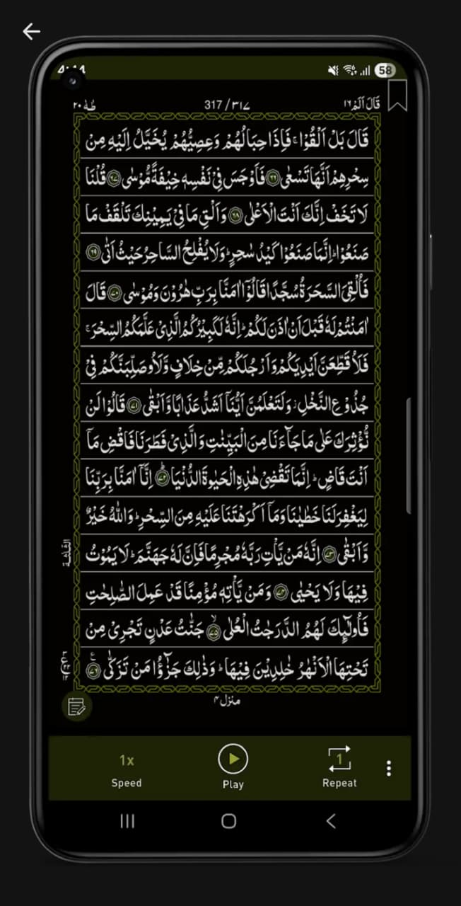
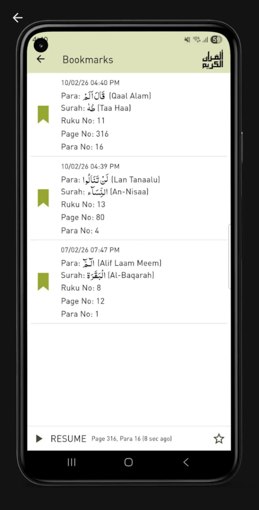
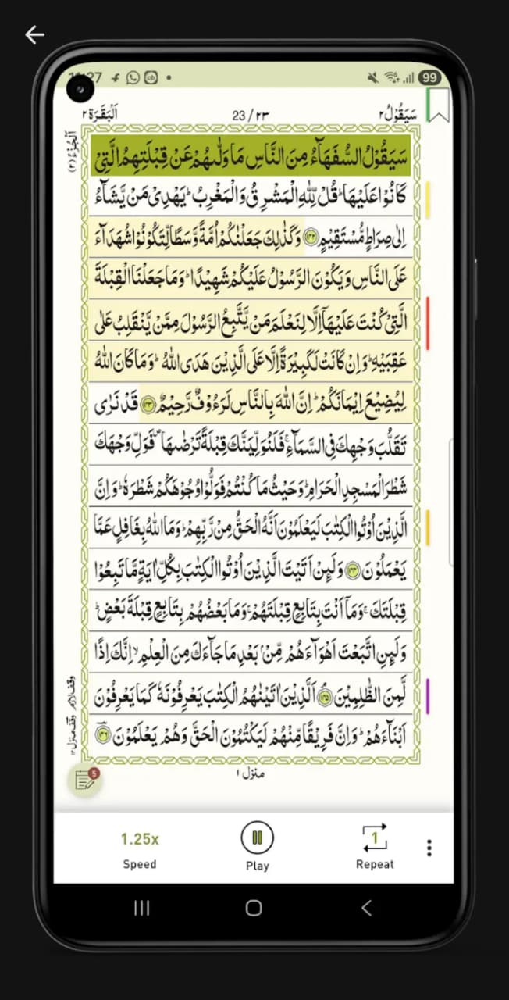

Q
Read and listen to the Quran
Use a book-style, right-to-left reader, continue from your saved place, bookmark pages, and listen to continuous recitation.
Your daily Islamic companion brings Quran reading and recitation, prayer times, Qibla direction, Hadith and Dua, and personal reminders together in one Android app.
For users aged 13 and older
Android appPublic store listing is being prepared
Read, listen, check prayer times, find the Qibla, and keep useful reminders close at hand.
Use a book-style, right-to-left reader, continue from your saved place, bookmark pages, and listen to continuous recitation.
View daily Salah times, adjust times manually when needed, and choose from the available Adhan voices and prayer alerts.
Use the device compass to find the direction of the Kaaba. Location can be supplied through your chosen settings.
Explore a searchable Hadith and Dua library, save items, and return to the reminders that matter to you.
Set reminders for morning, evening, sleep, Friday, and after-Salah adhkar, with notification options you can manage.
Keep both calendar dates together and add personal events to your calendar.
See the Quran reader, saved reading places, and listening controls.



Rafiq brings everyday Islamic tools into a single experience, with settings for reading, prayer, sound, and reminders that you can make your own.
The app is designed with offline-first access in mind, and supports downloads for content that you want to keep available on your device.
Read and listen to Quran, check prayer times, find the Qibla, explore Hadith and Dua, set reminders, and view a Hijri and Gregorian calendar.
Yes. Rafiq includes prayer calculation choices and manual time adjustments in its Salah settings.
Read the Rafiq Privacy Policy or use the Rafiq account deletion page.